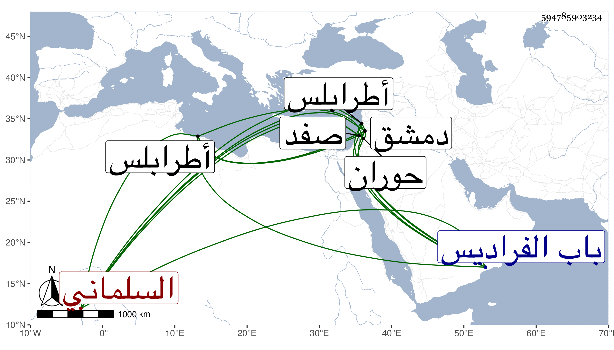

0902Sakhawi.DawLamic.ITO20230111-ara1.EIS1600.594785903234
Biography ID: 594785903234
713
علي بن حسن بن علي بن محمد بن جعفر العلاء السلماني القريري من قرى حوران . ولد في ذي الحجة سنة ثلاث وستين وسبعمائة وقدم من بلده في سنة سبع وسبعين واشتغل بعمل السكر ثم قرأ القرآن بحلقة إبراهيم الصوفي وسمع الحديث ثم اشتغل بالبادرائية على الشرف بن الشريشي والزهري والقرشي وأخذ عن الشرف الغزي والملكاوي وأكثر عنه بخصوصه وحصل له وظائف ثم بعد الفتنة افتقر وساءت حالته وذهب إلى طرابلس وصفد وناب في الحكم بأعمالها ثم عاد إلى دمشق ، وحج غير مرة وجلس في دكان يتجر في الثياب ثم مع الشهود بباب الشامية إلى أن مات وكذا جلس مدة للإقراء وكتب على الفتاوى وأم بالشامية البرانية وكان يقرأ في المحراب جيدا وللناس فيه اعتقاد كبير ، ولم نجد له سماعا على قدر سنه نعم سمع على الكمال أحمد بن علي بن عبد الحق بعض الاستيعاب لابن عبد البر وقال ابن اللبودي أنه سمع من جماعة وحدث سمع منه الفضلاء ، ومات في شوال سنة اثنتين وأربعين بدمشق ودفن بمقبرة باب الفراديس . أرخه ابن اللبودي وغيره .
